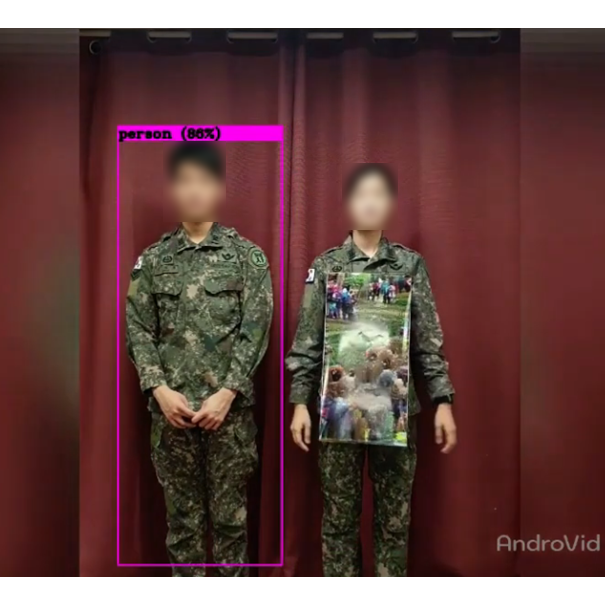
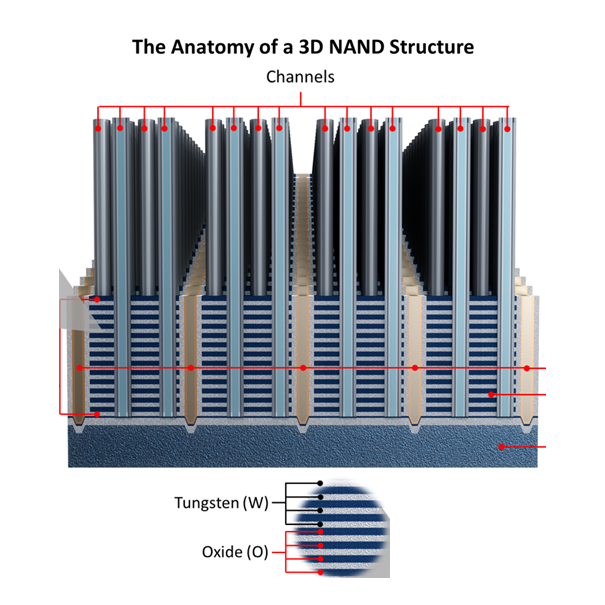

|
Byeongju Woo I am a first lieutenant in the Republic of Korea Air Force (ROKAF), currently serving as a research officer at the Agency for Defense Development (ADD), the Korean counterpart to the U.S. DARPA. Previously, I completed my bachelor's degree (Summa Cum Laude) in Computer Science and Engineering at POSTECH. My research interests lie in computer vision and deep learning. I've worked on the robust visual recognition in adverse conditions and Out-of-Distribution generalization. |

|
Research InterestsThe human visual system can generalize well to unseen situations, whereas machines struggle with. My research goal is to emulate human processes in machines, aiming to create systems that perceive not just to recognize but to truly comprehend the physical world. To this end, I am currently focusing on the following topics, including but not limited to:
|
Publications |

×
|
Textual Query-Driven Mask Transformer for Domain Generalized Segmentation
Byeongju Woo*, , , , ECCV, 2024 Project page | arXiv We introduce a semantic segmentation method that generalizes well to unseen domains. Our method effectively handles domain shifts by exploiting domain-invariant semantics from text embeddings of vision-language models (e.g., CLIP). |

×
|
Human Pose Estimation in Extremely Low-Light Conditions
, Jaesung Rim*, Boseung Jeong, Geonu Kim, ByungJu Woo, Haechan Lee, Sunghyun Cho, Suha Kwak CVPR, 2023 Project page | arXiv | Code We study human pose estimation in extremely low-light images, where severely corrupted inputs degrade prediction significantly. We build a dataset that provides real and aligned low-light and well-lit images and present a strong baseline method that fully exploit them. |
Projects |
|

×
|
Adversarial Patches with Enhanced Camouflage against Soldier Detection
Ministry of Science and ICT, 2021 We develop adversarial patches, to hide from the deep learning models that detect allies. We also aim for patches to resemble military uniform patterns, in order to camouflage well to humans. |
|

×
|
Object Detection for 3D NAND Flash Failure Detection
SK Hynix, department of DS Algorithm, 2021 We develop an automated algorithm to pre-check for rejects in 3D NAND Flash manufacturing. To this end, we design an object detection model that is reliable in the industrial field, with a small number of training data. |
Award and Scholarship
|
|
website template from Jon Barron |